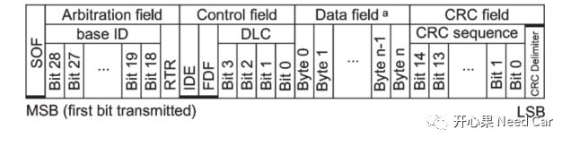
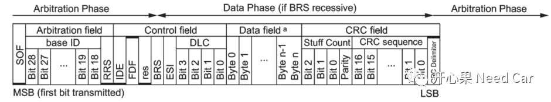
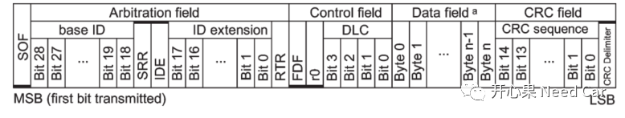
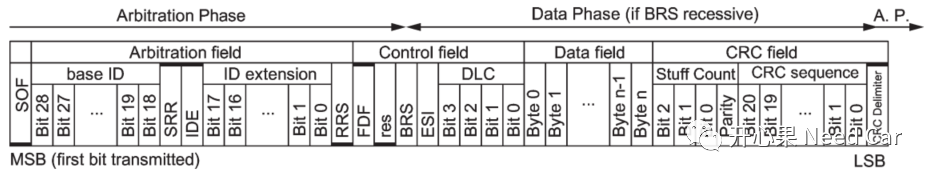

开心果 Need Car · 2022-12-21T08:22:00+08:00 · 微信原文
对于一些学习Autosar的朋友，有时会对一些细节犯迷糊，老实说，我自己很多时候也有这样的困惑。因为Autosar是一个软件架构，将许多底层具体的对象进行了抽象和封装，因而会使得我们对一些概念模糊不清。学习Autosar，不要急，也别气馁（很多时候，我也觉得Autosar很难理解）。因为Autosar的准入门槛本来就高，需要学习和理解的东西很多，希望"开心果 Need Car"公众号能帮助到你，解答你的一些困顿。本文，聚焦一下CAN总线的L-PDU。关于PDU（Protocol Data Unit）的讨论，可以参考前文Autosar通信栈：I-PDU、N-PDU、L-PDU，要掰扯清楚。但是，有小伙伴依然对L-PDU有些困惑，eg:"L-PDU具体包含些什么呢？"，带着这个疑问，我们试着找找答案。
1、CAN Frame格式
真正的解惑，需要先从CAN的格式（Frame）说起，参考11898 - 1，CAN的Frame可以分为如下几种：
（一）Classical Base Frame Format
经典CAN基本格式如下所示：

其中：SOF Bit、IDE Bit、FDF Bit为常显性（logic 0）。
（二）FD Base Frame Format
CAN FD的基本格式如下所示：

其中：SOF Bit、RSS Bit、IDE Bit、res Bit为常显性，FDF Bit为常隐性（ logic 1）。
（三）Classical Extended Frame Format
经典拓展格式CAN格式如下所示：

其中：SOF Bit、FDF Bit、r0 Bit、res Bit为常显性，SRR Bit、IDE Bit为常隐性。
（四）FD Extended Frame Format
拓展CAN FD格式如下所示：

其中：SOF Bit、RRS Bit、res Bit为常显性，SRR Bit、IDE Bit、FDF Bit为常隐性。
上述的4种格式，需要完整地在CAN BUS上传输，接收端才能正确识别发送端所发送的信息。但是，在软件开发的过程中，我们感觉：似乎并没有完全的设置这些信息，eg：CRC校验、Stuff Count等。我们好像只是设置了CAN ID、Data Length以及要发送的数据。确实，很多上层模块发开的小伙伴确实不会太在意MCAL的这些配置信息，以及相关寄存器的配置），但是，并不是说这些信息没有设置，而是驱动层小伙伴已经帮你做了。
认识了CAN的Frame，再回到问题：“CAN L-PDU包含了些啥呢？”先看一下Autosar的解释：Data Link Layer Protocol Data Unit. Consists of Identifier, Data Length and Data (SDU).
解释：CAN L-PDU包含CAN ID、Data Length、Data，而这三个信息就是我们常说的HOH（Hardware Object Handle），HOH又进一步地细分HRH（Hardware Receive Handle）和HTH（Hardware Transmit Handle）。而HOH属于软件抽象的东西（Struct数据类型），关于HOH、HTH、HRH的关系可以参考前文CAN通信基础概念：Mailbox与Hardware Object。
所以，CAN Frame信息在物理链路层传输，格式符合11898-1的规范要求，而L-PDU是软件抽象，仅就用户关注的CAN ID、Data Length、Data信息抽象，以便于适用到不同的平台。而L-PDU信息包含在CAN Frame中。
往期精彩回顾